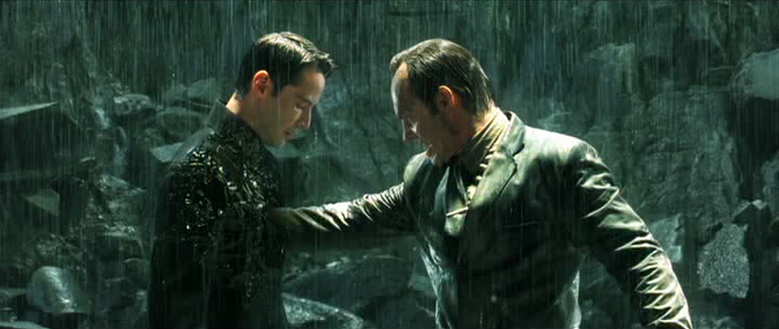
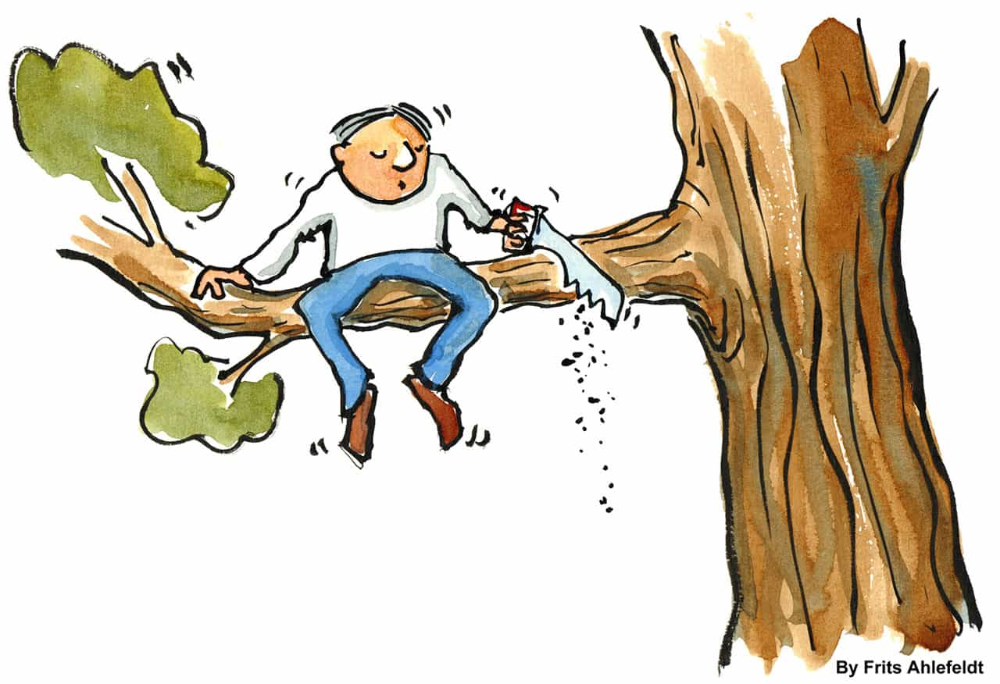

< < < Back
It’s In Our Nature To Judge Others – Return Of Kings
“Few people have the wisdom to prefer the criticism would do them good, to the praise that deceives them.”
– François de La Rochefoucald
Red pillers draw a lot of flak from modern fem-centric societies. And one of the common brickbats pounded on a red piller is that: red pillers are judgmental, narcissistic misogynists.
The social conditioning an average man receives from the Matrix of modern society (what I prefer to call “the Hatetrix” for its hatred of red pill and reality) to be non-judgmental, is often significantly overwhelming.
“
Don’t judge others! Don’t upset the apple cart!
Personally, I don’t mind people judging me as long as it’s rational and backed with logical proof. I don’t want to sound as a judgment thumping apologetic here. My thoughts about why judgment is necessary represent my own ‘judgment’ on the necessity and importance of the faculty of judgment itself.
Everyone judges – to judge is natural
You bet it is. Everyone judges – right from the cradle to the grave. Every moment, every second that a human being spends in this earthly existence, is spent in judging life. Every act you take is an act of judgment, even if it is as inconspicuous as breathing.You are judging my article as you’re reading now, and will judge again after you’ve finished reading it. We are in fact all judging to live, and living to judge.
But what is judgment? Judgment is nothing but evaluation or discernment of evidence to make a decision. We judge or evaluate life experiences, situations, things, opinions, thoughts, and people based on the values, emotions and logic we adhere to. Nature has blessed humans with the faculties of sense, speech, hearing, taste, touch and intuition. What purpose do these faculties have? To help us evaluate. In other words, judge.
Why do we seek knowledge and education? To make better decisions (judgments) which lead to a better life.
Evaluation is as necessary as oxygen is necessary for life. Our entire lives are spent in evaluating life and what it shows us. Life is in many ways, a journey in evaluation. As long as you have a brain, you will think. And to think is a judgmental decision. Not to think is also a judgmental decision. To act is a judgmental act. Not to act is also a judgmental act.
The problem in the modern feminist societies is that people have become so thin-skinned that everyone wants to avoid being judged (in other words, evaluated). Which eventually breeds intellectual decadence, and usually moral too.
Of course we won’t judge you! But, are you protesting or self-promoting?
Asking someone not to judge is one of the most unnatural things you could ask.What you’re essentially asking the person to do is to act brain-dead and abandon their natural human faculties, which is itself unnatural as long as the person is alive.
Are we supposed to be this?
Even if the judgmental types don’t judge you, it is because they’ve judged you unfit to handle their judgment or because they’ve judged not to judge you. Either way, you’re still judged even if you haven’t been technically judged. Criticism of the judgmental types by the non-judgmental types is itself an hypocritical act of ‘judgment’ by the ‘non-judging’. Essentially proving the point that everyone judges – whether you accept it or not.
The Hatetrix Reloaded
It is only when people judge themselves and surroundings critically that they notice the flaws which need to be changed for improvement. How can you assess without judging? How do non-judges assess when assessment is itself an act of judgment? I’ve always wondered that.
What we fail to realize is the faculty of evaluation is an inherent natural and often involuntary function of the human brain. Being non-judgmental is to be stupidly non-evaluative–which itself is unnatural, and in some cases, tyrannical when forcibly imposed on others.
Maintaining a non-judgmental attitude is what corrodes rational thinking and replaces it with a collectivist mentality in society, which eventually leads to intellectual droning. Non-judgmental types typically deny the harsh realities of life to live a life of illusions, finding it difficult to awaken to see the real world.
The nature of judgment
Judgment is blind, and often harsh. It is blind to emotions, illusions, feelings and prejudices. It only seeks logic, reality and solid proof as its base. Judgment rarely makes everyone happy because everyone is unique with unique ideologies. There’d always be haters around us. Thus, we can’t avoid making people unhappy when we judge. But that shouldn’t discourage us from judging itself.
People fear being judged because they fear being evaluated. Judgment is indigestible for the weak hearted, the irrational and the emotional types which are found aplenty in the modern world. Emotion and irrationality often trumps reason in modern-day interactions, thus leading to solipsism in society.
Since emotionalism is essentially a female trait, women and feminized men typically find it difficult to accept judgment. There are innumerable examples in real-life and fiction throughout history to explain this, but the fictional analogy found in the Judgment of Paris – which led to the Trojan War in Homer’s Iliad – explains this well aesthetically. Paris’s judgment to award the golden apple to Aphrodite caused Hera and Athena to simmer in hatred and envy (an inability to accept judgment), after all the three had tried to win by resorting to bribe Paris. Hypothetically, it could be debated that the war could’ve been averted had Paris chosen any of the other two. But what must not be forgotten is that the apple which was the prize was thrown by Eris herself, to sow eventual discord – irrespective of whoever won it.
Know when and how to judge
Judge when it is right to judge, and how to judge. That’s imperative. There’s a thin line between judgment and ignorance, which leads to injustice.
Judgment comes from evaluation of facts to make a decision. Ignorance comes from utilization of prejudices and faulty proofs to make a decision. Understand the difference clearly so as to know how to judge. Most people actually live ignorant lives, using prejudices, personal whims and superficial proofs to ‘judge’ people. Thus it is not judgmental people who are worthy of criticism, but rather the ignorant ones who give judgment a bad name.
Knowing when to judge is also very important. Discretion and calculation in judgment is strength, for it shows wisdom and maturity. You can’t afford to shoot off your mouth all the time. That’s the stupidity of loose cannons that lack the art of timing.

Judgment creates Wisdom
“A really intelligent man feels what other men only know.”
– Baron de Montesquieu
In his bestseller “The 50th law”, Robert Greene mentions, “Do not be afraid of people’s criticisms – without such feedback your work will be too personal and delusional” The book further elaborates this principle using the examples of 50 cent leaking a single from his G-Unit record in 2008 to obtain pre-release judgmental feedback from people about the song as well as to discover the recent changes in people’s tastes about music. The feedback helped him to ascertain what his fans wanted to hear, and so he used his website to reconnect with his audience. Greene further demonstrates this principle, by explaining how Eleanor Roosevelt opened informal channels of criticism and feedback from the general public during her tenure as The First Lady. The goal was to acquire awareness through judgment.
I’ve had people rip some of my articles. But I don’t mind, as I know they’re judging me based on their values, which is a natural thing for everyone. But it’s necessary and should be encouraged (unless if its’ malicious spam). People’s feedback, whether positive or negative, creates awareness about your audience (environment).
Embrace a judgmental attitude
Judge others freely, and allow yourself to be judged. Don’t fear criticism and evaluation, and practice the same on those around you – even if it may be purely mental and non-verbal. It’s one of your best friends—to know about yourself and others as well.
We often waste our lives trying to win over people with insincerity, deception and supplicating, obliging behavior. The connections we thus form are themselves fake and stand on shaky grounds of insincerity. Instead do yourself a favor and judge people, especially in context of intimate or personal connections. Sort the pearls from the pebbles. Use your time finding like-minded people instead of wasting it trying to meet opposite-minded people half-way.
Opposites may attract, but it’s the similarities which eventually endure. Even to discover similarities, we first need to judge to identify. Live to judge, and judge to live, to live a life free of illusions.
Read More: You Should Judge Books By Their Covers


{kind=link}
{kind=link}
{kind=link}
{kind=link}
{kind=link}